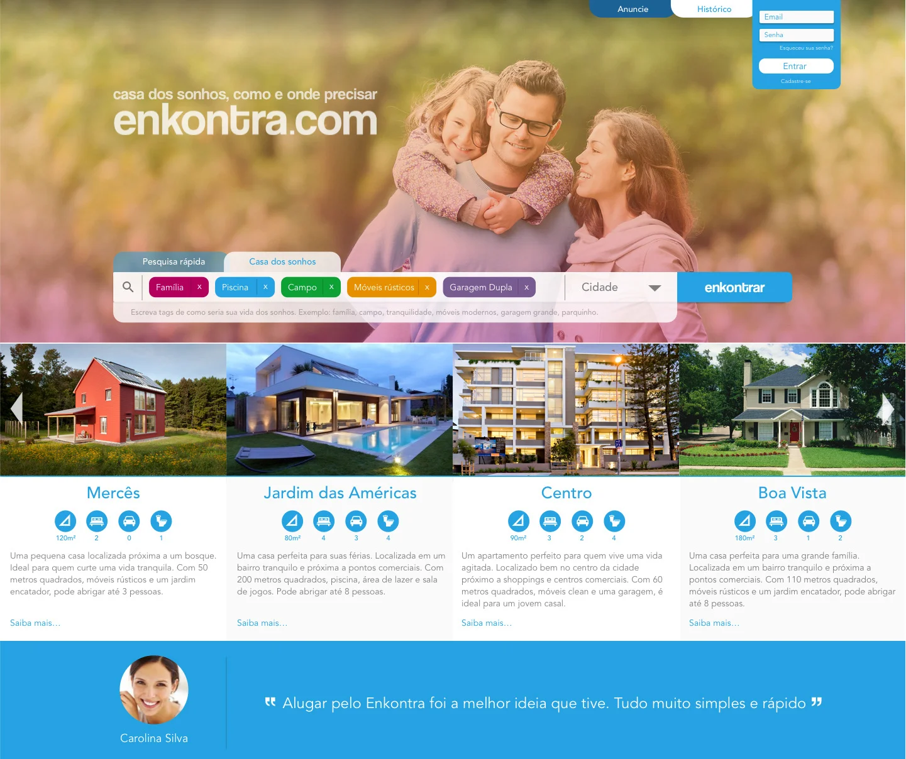
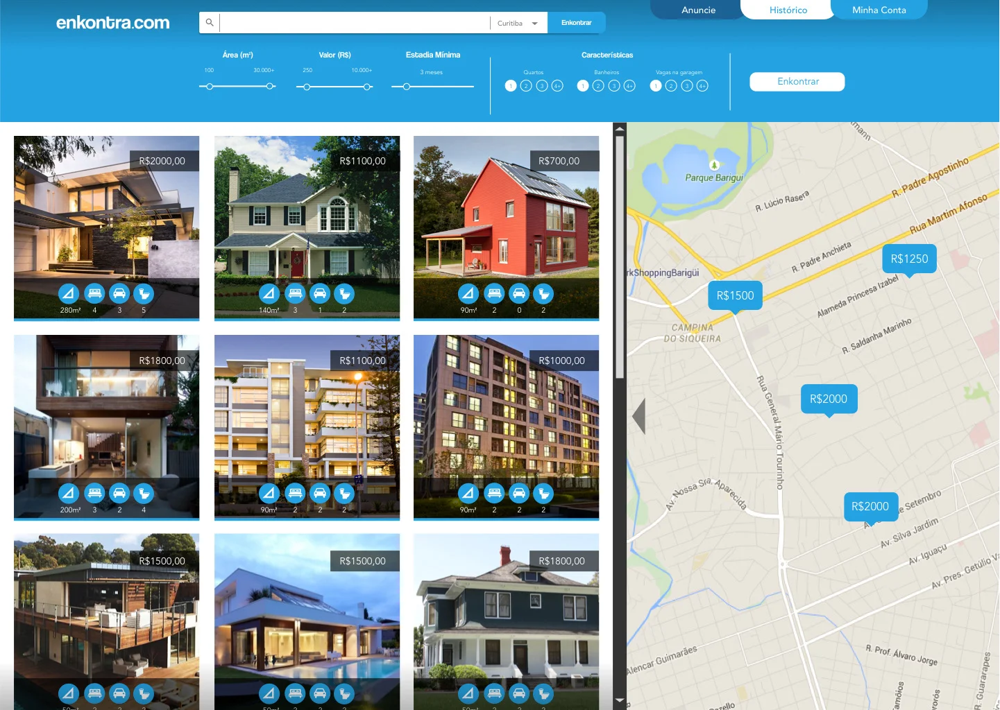
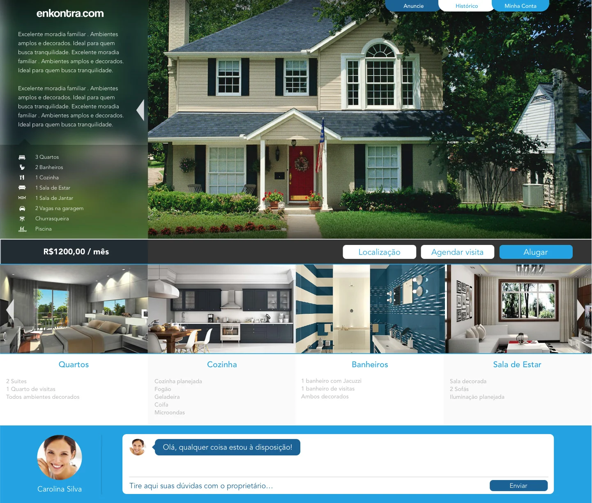
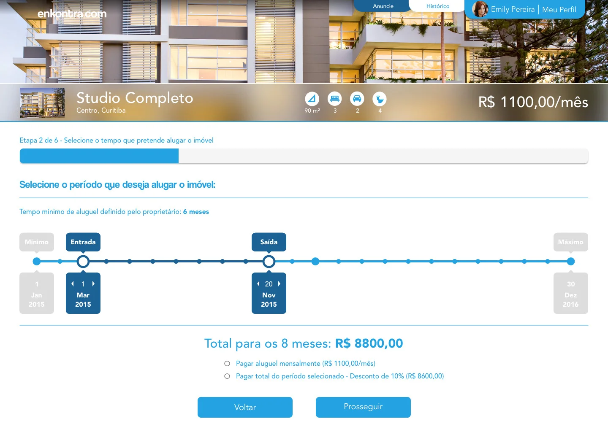
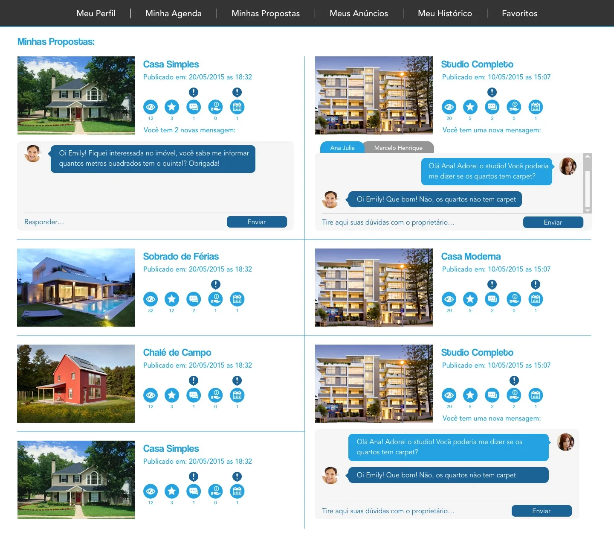

Overview
Enkontra.com is a concept for a Brazilian housing rental website. Unlike Airbnb, it's built around long-term rental contracts — without the heavy bureaucracy that usually comes with renting a home in Brazil.
I designed the full flow solo: a landing page built to convert, a search experience with map and filters, a property page detailed enough to rent sight-unseen, a guided multi-step rental process, and a panel for owners to manage their listings and talk to prospective tenants.
Landing page
The landing page leads with "casa dos sonhos, como e onde precisar" ("your dream home, however and wherever you need it"), a search bar that lets people search by tags — family, pool, countryside, rustic furniture — instead of rigid filters, and a set of featured listings by neighborhood.

Search & filters
Results can be refined by area, price, and minimum stay, or browsed directly on a map — useful for renters who care more about location than any single spec.

Property page
Each listing breaks the property down room by room — bedrooms, kitchen, bathrooms, living room — with its own photos and details, plus a chat where renters can ask the owner questions directly.

Rental process
Renting a property is a guided, six-step flow. This step lets the renter pick their move-in and move-out dates against the owner's minimum stay, then choose between paying month to month or paying the full period upfront for a discount.

Owner panel
Owners get their own management panel to track views and favorites on each listing, and reply to renter questions right from their proposals.
